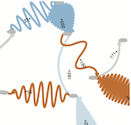
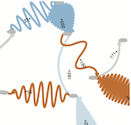

|
 |
|
 |
The goal of this course is to develop a vocabulary and framework for discussing, critiquing, and designing information visualization tools. The course syllabus and schedule are still tentative and subject to change.
| week | date | topic | date | topic |
| 1 | 1/10 | Introduction | 1/12 | Design |
| 2 | 1/17 | Process | 1/19 | Data |
| 3 | 1/24 | Visual encoding | 1/26 | Tasks and interaction |
| 4 | 1/31 | Data and task abstraction 1 | 2/2 | no class |
| 5 | 2/7 | Visual representations | 2/9 | Multiple views |
| 6 | 2/14 | Filtering and aggregation | 2/16 | Data and task abstraction 2 |
| 7 | 2/21 | Dimensionality reduction | 2/23 | Tabular data |
| 8 | 2/28 | Trees and graphs | 3/1 | Trees and graphs |
| 9 | 3/6 | Maps | 3/8 | Toolkits |
| 10 | 3/12 | no class | 3/14 | no class |
| 11 | 3/20 | no class | 3/22 | Design studies |
| 12 | 3/27 | Project updates 1 | 3/29 | Project updates 2 |
| 13 | 4/3 | Student presentations | 4/5 | Student presentations |
| 14 | 4/10 | Student presentations | 4/12 | Student presentations |
| 15 | 4/17 | no class | 4/19 | Considering the human |
| 16 | 4/24 | Student presentations | 4/26 | no class |
| 17 | 5/1 | Project presentations |
| prerequisites | There are no enforced prerequisites. Grad students from other departments are welcome. Either or both of CS5630: Scientific Visualization and CS5610: Computer Graphics are very helpful but not required. It is possible for students in other disciplines to take this course without a significant programming background by picking an analysis project. At a minimum, projects will require simple scripting skills for wrangling data. |
| required textbook | Information Visualization: Principles, Methods, and Practice (pre-publication draft), Tamara Munzner, AK Peters, (to appear 2012). Note from Tamara: these book chapters are an early draft and are far from finished. Do not quote. Many things will change! |
| grading | Grades in this course will be determined by:
There will be no final examination in this course, final project presentations will be in a 2-hour slot during the final exams period (Tues May 1st from 1-3pm). I will send you email with detailed feedback on your work over the course of the term as it is completed. In many cases I'll be binning individual components of your grade based on on a scale of the sort {great 100%, good 90%, ok 80%, poor 70%, zero 0%}, although the exact weighting may vary. |
| academic honesty |
| overview | Your final project will be in one of two flavors: programming, where you will implement a visualization system of your own; or analysis, where you will analyze a data set of your choosing using a variety of existing visualization systems. In both cases you will be responsible for acquiring data, creating a data and task abstraction of the problem your visualization system(s) will address, surveying existing visualization methods, and analyzing the results -- depending on your type of project you will emphasize these aspects to different degrees. You may do the projects individually or in teams of two. The total amount of work done must be commensurate with the size of the group. Note that research novelty is not a requirement for a course project. PROGRAMMING PROJECT: For a programming project, you will implement a visualization system you design and develop yourself. Common varieties of programming projects are:
ANALYSIS PROJECT: For an analysis project, you will analyze a dataset/problem of your choosing using a variety of existing visualization tools, as well as analyze the strengths and weaknesses of those tools and discuss in detail whether they are effective for the data and task that you have chosen. These projects are problem-driven design studies in nature. No serious programming is required, so this option is suitable for non-CS students. You may need to write some scripts to change data formats, however. A (not necessarily complete) list of visualization tools can be found on the resources page. This style of project will require a much more extensive survey of previous work than a programming project. |
| important dates | -meetings, Feb 14 - 23 |
| proposal | Written proposal length: several pages Written proposal format: PDF Prior to submitting your proposal you will meet with me in person to discuss your project at least once before submitting a proposal. It may take more than one meeting for me to sign off that you're ready to move on to the proposal writeup stage. You'll need to meet with me between Feb 14 and Feb 23 at the latest, and earlier would be better. I advise that you start by thinking about a domain/dataset/visualization method that you are interested in exploring more deeply. The key is to find some domain and task that both interests you and presents an opportunity for infovis. That is, there is some task where a human needs to understand the structure of a large dataset. You're welcome to link the infovis project to another class or research project. Keep in mind that you're submitting a proposal, not a specification -- it's natural that your plans will change somewhat as you refine your ideas. But your proposal should be based on an idea that we've discussed and I've approved. When you come talk to me about your proposal, I'll give you some pointers to background reading in the area of your interest. Your proposal should include:
Pointers to advice on good writing can be found on the resources page. One proposal per project (whether it is individual or team) is due on March 2 by midnight, as a PDF by email with the subject header 6964 submit proposal |
update | Update presentation length: 12 minutes total. 10 minutes to present + 2 minutes for questions The class sessions on March 27, 29, and April 3 will be used for project update presentations. You must have slides in either PDF, PPT, or Keynote format. If you're using my laptop, email your slides to me by noon, with the subject header 6964 submit updateIf your presentation contains a video and you plan to use my laptop, contact me the day before so that we can test codecs. If you want to give a live demo on your machine, you can try, but have backup slides in your slide deck in case it doesn't work immediately. Or a backup video. If you're using your own laptop, email slides to me by 4:30pm on the day you present (an hour after class). Do not assume your classmates have read your proposal. You should prepare a short presentation where you summarize what you're doing and why, your data and task abstraction, and your plan for analyzing the data, whether its the design of your system or details of the tools you plan to use. Make sure you leave enough time to explicitly discuss the progress you've made so far. |
final presentation | Final presentation length: 6 minutes total. 5 minutes to present + 1 minutes for questions You will present the results of your project with both a presentation and a process book (discussed below). The presentation will occur during the final exam slot for this course on May 1 from 1-3pm. Showing live demos of your software, or the tools you analyzed, in action is encouraged in the final presentation. If you are giving a demo, be sure to practice in advance so that you don't run over your time slot! Also remember that the audience has seen your project update, so you don't need to repeat all of that. Focus more on your results.
|
process book | Process book format: anything you
want! A paper, slides, notebook, a book you bind yourself...
Your process book tells the story of your project from its beginning to the final design. Equally important to your final results is how you got there! Your process book is the place you describe the space of possiblities you explored at each step of your project. It is not, however, a journal or lab notebook that describes every detail -- you should think carefully about the important decisions you made and insights you gained and present your reasoning in a concise way. I strongly advise you to include many figures in your process book, including sketches of potential designs, images of your prototypes, screen shots from different visualization tools you explored, etc. Several images illustrating changes in your design or focus over time will be far more informative than text describing those changes. Instead, use text to describe the rationale behind the evolution of your project. Your process book should include the following topics, however the specific format and content of the book is completely up to you. Depending on your project type the amount of discussion you devote to each of the following topics will vary:
As this will be your only chance to describe your final project in detail make sure that your process book is a standalone document that fully describes your results and/or final design. Your process book and code (if you are doing a programming project) are due two days after the final presentations. If you are submitting code it should be packed up as well. You must include a README file at the root giving a brief roadmap/overview of the organization of what you're handing in: which parts are your code, which parts are libraries, and so on. It should also state how to compile and run the program. I do not necessarily expect that your software compiles on my machine if you developed for a different platform, but I want to see what you've done. |
examples | A few examples of process books. These are meant as inspiration and are not necessarily indicative of the scope for your specific information visualization projects. A few examples of projects from Tamara Munzner's infovis course at UBC:
There are several other infovis courses that have project components that can be found on the resources page. Browsing through the final reports may help you think about what you might like to do, and what scope is realistic for a course project. Note that the scope of the projects may be different at other universities. |
| overview | Your presentations on the readings will take place in the second half of the course. Only the presenter is required to do the additional readings for a topic, although all students are welcome to do so. You will present 3 papers. At least 1 of them should be from the set that I assign. For the other 2, you're free to choose any papers on the topic, or to pick others from my provided list. |
| important dates | -topic choices due, March 7 at
noon |
| topics |
|
| signing up | Send me your top three topic choices by Wednesday March 7 at noon, with a subject header of 6964 submit topicsI will announce the schedule during the following lecture and post papers soon after that. |
| presentation | Presentation length: 20 minutes total. 18 minutes to present + 2 minutes for questions You should prepare slides to accompany your talk. You may use the software platform of your choice to present these slides, as long as it's also possible to create a PDF version of your talk for the course web site. Most people use PowerPoint, Keynote, OpenOffice, or latex/beamer. There are links to advice on giving good talks on the resources page. You may use my laptop for presentations. If you need to use anything except for PDF, Keynote, or PowerPoint, check with me in advance to make sure that the required software is installed on my machine. By noon on the day of class, send me either your presentation, or a note telling me that you're using your own laptop. In the latter case, send me your presentation right after class ends in PDF format. Your email must have the following subject header: 6964 submit slides |
content | Your presentation should not simply outline the papers. You will need to present the critical ideas in the paper so that your colleagues in the class have a basis for understanding your subsequent discussion. Part of this assignment is to use your judgement on what those critical ideas are and how to concisely present them. You should compare the approaches of the papers by a specific discussion of their relative strengths and weaknesses. Critique whether the proposed tools and techniques in these papers actually solve the intended domain problem. Showing a demo or a video of one of the systems in action can be very helpful to show your colleagues the look and feel of an interactive system. If you want do this and plan to use my laptop to present, contact me in advance (at least the day before) so that we can sort whether the demo will indeed run. |
grading | This is the grading break-down I plan to use:
|
| overview |
You should do the core readings before the lectures and participate in class discussions during both lectures and student presentations. Your participation grade is based on the required reading questions you submit before class as well as in-class discussion -- both during the professor's lectures, and during your classmates' presentations. Attendence in class is expected. By noon (2 hours before class starts), you must send me email with a set of three questions/comments about the material being covered that day. I encourage you to also bring these with you to class and use them as a springboard for discussion. Your email must have the subject line 6964 submit QXXwhere XX is the lecture number (01-29). |
| content |
Your submitted questions/comments should be thoughtful, and clearly show that you've done the reading and reflected on it. If you genuinely are confused by some aspect of the reading, then it's useful and legitimate to ask for clarification. However, simply asking something that you could trivially look up yourself is not a good question. Neither are vague statements like "I liked it" or "I learned a lot". As with any written work that you hand in, I expect correct grammar and spelling. Do be concise: a few sentences per question is good, with a maximum of one paragraph per question. |
| grading |
Your submitted questions/comments will be bucket-graded. Below are example questions, ranging from great to poor:
|
| recommended | - Visualization.
Tamara Munzner. Chapter 27, p 675-707, of Fundamentals of Graphics,
Third Edition, by Peter Shirley et al. AK Peters, 2009. - A Tour through the Visualization Zoo. Jeffrey Heer, Michael Bostock, Vadim Ogievetsky. Communications of the ACM, 53(6), pp. 59-67, Jun 2010. - The Value of Visualization. Jarke van Wijk. Proceedings of the IEEE Visualization Conference, pp. 79-86, 2005. - Hans Rosling, TED 2006 - NYT Peek Into Netflix Queues - NYT How Different Groups Spend Their Day |
| sildes | L01-intro.pdf |
| required |
- Design
of data figures. Bang Wong. Nature Methods 7, pp. 665, Sept
2010. - Color coding. Bang Wong. Nature Methods 7, pp. 573, Aug 2010. - Avoiding color. Bang Wong. Nature Methods 8, pp. 525, Jun 2011. - Gestalt principles (part 1). Bang Wong. Nature Methods 7, pp. 863, Nov 2010. - Gestalt principles (part 2). Bang Wong. Nature Methods 7, pp. 941, Dec 2010. - Negative space. Bang Wong. Nature Methods 8, pp. 5, Jan 2011. - Salience to relevance. Bang Wong. Nature Methods 8, pp. 889, Nov 2011. - Points of review (part 2). Bang Wong. Nature Methods 8, pp. 189, Mar 2011. - Decision to launch the Challenger. E. Tufte. In Visual Explanations, 1997. |
| recommended |
- Representation
and Misrepresentation: Tufte and the Morton Thiokol Engineers
on the Challenger. Critique of Tufte's argument by Wade
Robison, Roger Boisjoly, David Hoeker and Stefan Young,
1999. - Useful Junk? The Effects of Visual Embellishment on Comprehension and Memorability of Charts. Scott Bateman, Regan L. Mandryk, Carl Gutwin, Aaron Genest, David McDine, Christopher Brooks. Proceedings of CHI '10, pp. 2573-2582, Apr 2010. - Want to make a chart memorable? Add junk. Critique of Bateman's argument by Robert Kosara, 2011. - Unseen and Unaware: Implications of Recent Research on Failures of Visual Awareness for Human–Computer Interface Design. Alexander Varakin, Daniel T. Levin, Roger Fidler. Human-Computer Interaction, 19(4), pp. 389-422, Nov 2009. - The Visual Display of Quantitative Information. Edward Tufte. 1997. - Non-designer's Design Book. Robin Williams. 1994. |
| sildes | L02-design.pdf |
| required |
- Book
chapter 1: Visualization Design. - Design Principles for Visual Communication. Maneesh Agrawala, Wilmot Li, Floraine Berthouzoz. Communications of the ACM, 54(4), pp. 60-69, Apr 2011. - 99% Details. Podcast from 99% Invisible, Sep 2010. |
| recommended |
- A Conversation with
Jeff Heer, Martin Wattenberg, and Fernanda Viegas, ACM
Queue, 2010. - Process and Pitfalls in Writing Information Visualization Research Papers. Tamara Munzner. Chapter from Information Visualization: Human-Centered Issues and Perspectives. Andreas Kerren, John T. Stasko, Jean-Daniel Fekete, Chris North, eds. Springer LNCS Volume 4950, p 134-153, 2008. - Sketching: The Visual Thinking Power Tool. M. Rhode, Jan 2011. |
| sildes | L03-process.pdf |
| required | - Book
chapter 2: Data Principles. - Polaris: A System for Query, Analysis and Visualization of Multi-dimensional Relational Databases (extended paper). Chris Stolte, Diane Tang and Pat Hanrahan. IEEE Transactions on Visualization and Computer Graphics, 8(1), Jan 2002. |
| recommended |
- Levels of
Measurement. Wikipedia. - On the Theory of Scales of Measurement. S. S. Stevens. Science, 103(2684), pp. 677-680, June 1946. |
| sildes | L04-data.pdf |
| required |
- Book
chapter 4: Interaction Principles. - The Eyes Have It: A Task by Data Type Taxonomy for Information Visualizations. Ben Shneiderman. Proceedings of the IEEE Conference on Visual Languages, 1996. - Low-Level Components of Analytic Activity in Information Visualization. Robert Amar, James Eagan, and John Stasko. Proceedings of InfoVis, 2005. |
| recommended |
- Animation:
Can It Facilitate? Barbara Tversky, Julie Morrison,
Mireille Betrancourt. International Journal of Human
Computer Studies 57:4, pp 247-262, 2002. - Cognitive costs of zooming versus using multiple windows. Matthew D. Plumlee and Colin Ware. ACM Trans. Applied Perception (TAP) 13(2):1-31, 2006. - Animated Transitions in Statistical Data Graphics. Jeffrey Heer and George G. Robertson. IEEE TVCG (Proc. InfoVis 2007) 13(6): 1240-1247, 2007. - animated transitions video |
| sildes | L06-tasks.pdf |
| homework | The Pancake Challenge |
| required | - What is affinity diagraming? |
| recommended | |
| sildes | L07-abstraction.pdf |
| required |
- Book
chapter 5: Single View Methods. - Scented Widgets: Improving Navigation Cues with Embedded Visualizations. Wesley Willett, Jeffrey Heer, and Maneesh Agrawala. IEEE TVCG (Proc InfoVis 2007) 13(6):1129-1136. |
| recommended |
- Arc Length-based Aspect Ratio Selection.
Justin Talbot, John Gerth, and Pat Hanrahan. IEEE TVCG (Proceedings of
InfoVis), 2011. - An Extension of Wilkinson’s Algorithm for Positioning Tick Labels on Axes. Justin Talbot, Sharon Lin, and Pat Hanrahan. IEEE TVCG 16(6), 2010. - The representation of numbers. Zhang and Norman. Cognition, 1995. - Multi-Scale Banking to 45 Degrees Jeffrey Heer, Maneesh Agrawala. Proc. InfoVis 2006, published as IEEE Transactions on Visualization and Computer Graphics (TVCG), 12(5), Sep/Oct 2006, pages 701-708. - Hierarchical Edge Bundles: Visualization of Adjacency Relations in Hierarchical Data. Danny Holten, Proc InfoVis 06, published as IEEE TVCG 12(5), p 741 - 748, 2006. - Understanding Interactive Legends: a Comparative Evaluation with Standard Widgets. N. Riche, B. Lee, C. Plaisant. Computer Graphics Forum (Proc. of EuroVis '10), 29(3), pp. 1193-1202, 2010. - milestones in the history of statistical graphics. |
| sildes | L08-representations.pdf |
| required |
- Book
chapter 6: Multiple View Methods. - The visual design and control of the trellis display. R. Becker, W. Cleveland, M. Shyu. Journal of Computational and Graphical Statistics, 5(2), 1996. |
| recommended |
- Guidelines for Using Multiple Views in Information Visualization.
M. Wang, A. Woodruff, A. Kuchinsky. Proceedings of the working
conference on Advanced visual interfaces (AVI '00),
2000. - State of the Art: Coordinated & Multiple Views in Exploratory Visualization. J. Roberts. Proc. Conference on Coordinated & Multiple Views in Exploratory Visualization (CMV) 2007. - Configuring Hierarchical Layouts to Address Research Questions. A. Slingsby, J. Dykes, J. Wood. IEEE Transactions on Visualization and Computer Graphics 15 (6), Nov-Dec 2009. - Product Plots. H. Wickham, H. Hofmann. IEEE Transactions on Visualization and Computer Graphics (Proc. InfoVis '11), 2011. |
| sildes | L09-multiple-views.pdf |
| required |
- Book
chapter 7: Item Reduction Methods. - A review of overview+detail, zooming, and focus+context interfaces. Andy Cockburn, Amy Karlson, and Benjamin B. Bederson. ACM Computing Surveys 41(1), 2008. |
| recommended |
- A
fisheye follow-up: further reflections on focus +
context George Furnas, CHI '06, Proceedings of the SIGCHI conference on Human Factors in computing systems. - Space-Scale Diagrams: Understanding Multiscale Interfaces George Furnas and Ben Bederson, Proc SIGCHI '95. - SpaceTree: Supporting Exploration in Large Node Link Tree, Design Evolution and Empirical Evaluation Catherine Plaisant, Jesse Grosjean, and Ben B. Bederson. Proc. InfoVis 2002. - Pad++: A Zooming Graphical Interface for Exploring Alternate Interface Physics Ben Bederson, and James D Hollan, Proc UIST 94. - Degree-of-interest trees: a component of an attention-reactive user interface. S. Card and D. Nation, Proceedings of the Working Conference on Advanced Visual Interfaces (AVI 02), 2002. |
| sildes | L10-filtering-aggregation.pdf |
| sildes | L11-abstraction2.pdf |
| homework | TheSmartPhoneChallenge.pdf |
| guest lecturer | Sam Gerber, SCI Institute, University of Utah. |
| required |
- Book
chapter 8: Attribute Reduction Methods. - Glimmer: Multilevel MDS on the GPU. Stephen Ingram, Tamara Munzner and Marc Olano. IEEE TVCG, 15(2):249-261, Mar/Apr 2009. |
| recommended |
- Visual
Exploration of High Dimensional Scalar Functions. Samuel
Gerber, Peer-Timo Bremer, Valerio Pascucci, Ross Whitaker, IEEE
Transactions on Visualization and Computer Graphics, Proceedings
of VIS 2010. - DimStiller: Workflows for dimensional analysis and reduction. Stephen Ingram, Tamara Munzner, Veronika Irvine, Melanie Tory, Steven Bergner, and Torsten Moeller. IEEE Conference on Visual Analytics Software and Technologies (VAST) 2010, p 3-10. - Interactive Dimensionality Reduction Through User-defined Combinations of Quality Metrics. Sara Johansson and Jimmy Johansson. IEEE Trans. Visualization and Computer Graphics (Proc. InfoVis 09) 15(6):993-1000, 2009. |
| sildes | L12-dimensionality-reduction.pdf |
| required |
- Stacked Graphs – Geometry & Aesthetics.
Byron & Wattenberg. Proceedings of InfoVis 2008. - Metric-Based Network Exploration and Multiscale Scatterplot Yves Chiricota, Fabien Jourdan, Guy Melancon. Proc. InfoVis 04, pages 135-142. - Hierarchical Parallel Coordinates for Exploration of Large Datasets Ying-Huey Fua, Matthew O. Ward, and Elke A. Rundensteiner, IEEE Visualization '99. |
| recommended |
- Sizing the Horizon: The Effects of Chart Size and Layering on the Graphical Perception of Time Series Visualizations.
Jeffrey Heer, Nicholas Kong, and Maneesh Agrawala. ACM Human
Factors in Computing Systems (CHI), 2009. pp. 1303 -
1312. - Parallel sets: visual analysis of categorical data Fabien Bendix, Robert Kosara, and Helwig Hauser. Proc. InfoVis 2005, p 133-140. |
| sildes |
L13-tabular.pdf |
| required |
-
Graph Visualisation in Information Visualisation: a Survey Ivan
Herman, Guy Melancon, M. Scott Marshall. IEEE Transactions on
Visualization and Computer Graphics, 6(1), pp. 24-44, 2000. - Visual Exploration of Multivariate Graphs. Martin Wattenberg, Proc. CHI 2006. - ABySS-Explorer: Visualizing genome sequence assemblies. Cydney B. Nielsen, Shaun D. Jackman, Inanc Birol, Steven J.M. Jones. IEEE Transactions on Visualization and Computer Graphics (Proc InfoVis 2009) 15(6):881-8, 2009. |
| recommended |
- Task taxonomy for graph visualization.B. Lee, C. Plaisant, C. Sims Parr, J.-D. Fekete, N. Henry,
Proc. of BELIV '06, April '06, pp. 1-5. - Topological Fisheye Views for Visualizing Large Graphs, Emden Gansner, Yehuda Koren and Stephen North, IEEE TVCG 11(4), p 457-468, 2005. - Online Dynamic Graph Drawing Yaniv Frishman and Ayellet Tal. Proc EuroVis 2007, 75-82. - A Visual Bibliography of Tree Visualization, Hans-Jorg Schulz, InfoVis 2010 Best Poster. - Animated Exploration of Graphs with Radial Layout Ka-Ping Yee, Danyel Fisher, Rachna Dhamija, and Marti Hearst, Proc InfoVis 2001. - Multiscale Visualization of Small World Networks David Auber, Yves Chiricota, Fabien Jourdan, Guy Melancon, Proc. InfoVis 2003. - Cushion Treemaps Jack J. van Wijk and Huub van de Wetering, Proc InfoVis 1999, pp 73-78. - Webpages as graphs. - Map of the market. - Visualization of large tree structures. - Planarity game. - Force-directed layout in Protovis. |
| sildes | L14-trees.pdf L15-graphs.pdf |
| required |
- WORLDMAPPER: the world as you've never seen it before.
Danny Dorling, Anna Barford and Mark Newman,
IEEE TVCG 12(5), 2006. - Unfolding the Earth: Myriahedral Projections. Jarke J. van Wijk, The Cartographic Journal, Vol. 45, No. 1, pp.32-42, February 2008. - Flow Map Layout via Spiral Trees. Kevin Buchin, Bettina Speckmann, and Kevin Verbeek. IEEE TVCG 17(12):2536-2544 (Proc. InfoVis 2011). |
| recommended |
- Diffusion-based method for producing density-equalizing maps.
Michael T. Gastner and M. E. J. Newman,
PNAS 101(20), 2004. - Rendering Effective Route Maps: Improving Usability Through Generalization. Maneesh Agrawala and Chris Stolte, SIGGRAPH 2001. - Examples of diffusion-based cartograms. |
| sildes |
L16-maps.pdf |
| required |
- D3: Data-Driven Documents. Michael Bostock, Vadim Ogievetsky, Jeffrey Heer. IEEE Trans. Visualization & Comp. Graphics (Proc. InfoVis), 2011. |
| recommended |
- Prefuse: A Toolkit for Interactive Information Visualization. Jeffrey Heer, Stuart K. Card, James Landay. Proc ACM CHI, 421-430, 2005. - Protovis: A Graphical Toolkit for Visualization. Michael Bostock and Jeffrey Heer. IEEE Trans. Visualization & Comp. Graphics (Proc. InfoVis), 2009. - Computational Information Desigh. Ben Fry's dissertation. - Jan Willem Tulp on D3 and Protovis - Joe Mako on Tableau - Miriah Meyer on Processing - Tableau Public - Mike Bostock on D3 - D3 for Mere Mortals by Luke Francl - How to Give a Talk. Paul N. Edwards - The secret structure of great talks. Nancy Duarte. - Hans Rosling, TED 2006 - Brian Cox, TED 2008 |
| sildes |
L17-toolkits.pdf |
| references |
Visualization
framework cheat sheet Processing tutorials |
| required |
-
Visual Exploration and Analysis of Historic Hotel Visits. Chris
Weaver, David Fyfe, Anthony Robinson, Deryck W. Holdsworth, Donna J.
Peuquet and Alan M. MacEachren.
Information Visualization (Special Issue on Visual Analytics),
Feb 2007. - MizBee: A Multiscale Synteny Browser. Miriah Meyer, Tamara Munzner, and Hanspeter Pfister. IEEE Trans. Visualization and Computer Graphics 15(6):897-904 (Proc. InfoVis 09), 2009. |
| recommended |
- Knowledge Precepts for Design and
Evaluation of Information Visualizations. Robert Amar and John
Stasko. IEEE Trans. Visualization
and Computer Graphics 11(4):432-442, 2005 - MulteeSum: A Tool for Comparative Temporal Gene Expression and Spatial Data. Miriah Meyer, Tamara Munzner, Angela DePace and Hanspeter Pfister. IEEE Trans. Visualization and Computer Graphics 16(6):908-917 (Proc. InfoVis 2010), 2010. - Pathline: A Tool for Comparative Functional Genomics. Miriah Meyer, Bang Wong, Tamara Munzner, Mark Styczynski and Hanspeter Pfister. Computer Graphics Forum (Proc. EuroVis 2010), 29(3):1043-1052 - ABySS-Explorer: Visualizing genome sequence assemblies. Cydney B. Nielsen, Shaun D. Jackman, Inanc Birol, Steven J.M. Jones. IEEE Transactions on Visualization and Computer Graphics (Proc InfoVis 2009) 15(6):881-8, 2009. - Interactive Coordinated Multiple-View Visualization of Biomechanical Motion Data. Daniel F. Keefe, Marcus Ewert, William Ribarsky, Remco Chang. IEEE Trans. Visualization and Computer Graphics (Proc. Vis 2009), 15(6):1383-1390, 2009. - MassVis: Visual Analysis of Protein Complexes Using Mass Spectrometry. Robert Kincaid and Kurt Dejgaard. IEEE Symp Visual Analytics Science and Technology (VAST 2009), p 163-170, 2009. - Cerebral: Visualizing Multiple Experimental Conditions on a Graph with Biological Context. Aaron Barsky, Tamara Munzner, Jennifer L. Gardy, and Robert Kincaid. IEEE Transactions on Visualization and Computer Graphics (Proc. InfoVis 2008) 14(6) (Nov-Dec) 2008, p 1253-1260. - LiveRAC - Interactive Visual Exploration of System Management Time-Series Data. Peter McLachlan, Tamara Munzner, Eleftherios Koutsofios, Stephen North. Proc. Conf. on Human Factors in Computing Systems (CHI) 2008, pp 1483-1492. - Session Viewer: Visual Exploratory Analysis of Web Session Logs. Heidi Lam, Daniel Russell, Diane Tang, and Tamara Munzner. Proc. IEEE Symposium on Visual Analytics Science and Technology (VAST), p 147-154, 2007. - Exploratory visualization of array-based comparative genomic hybridization. Robert Kincaid, Amir Ben-Dor, and Zohar Yakhini. Information Visualization (2005) 4, 176-190. - Coordinated Graph and Scatter-Plot Views for the Visual Exploration of Microarray Time-Series Data Paul Craig and Jessie Kennedy, Proc. InfoVis 2003, p 173-180. - Cluster and Calendar based Visualization of Time Series Data. Jarke J. van Wijk and Edward R. van Selow, Proc. InfoVis 1999, p 4-9. - Constellation: A Visualization Tool For Linguistic Queries from MindNet. Tamara Munzner, Francois Guimbretiere, and George Robertson. Proc. InfoVis 1999, p 132-135. |
| sildes |
L18-design-studies.pdf |
|
- Interactive Visualizations of English Usage in Public
Media. Yuan Fang and Zhan Wang - The "friend" analyzer. Chao Yang and Ian Jensen - Color Palette Extraction. Clifton Brooks - Happiness visualization. Nguyen Thanh Hoa and Lin Zhang - Collaborative Network Analysis and Visualization. Samira Daruki and Swetha Machanavajhala - Visualization of earthquake data. Chenxu Ding and Mingwang Tang |
|
- Aldet (Anti-Linkage Disequilibrium Exploration Tool). Alex Bigelow - Interactive Linked 3D and 2D Visualizations of Communication Patterns on the 3D Torus Communication Networks of Supercomputers. Aaditya Landge - Analysis and Visualization of xentrace logs. Nikhil Mishrikoti - Improving Visualization of Heavy Hitters within Nagios. Brian Petersen and Anshul Joshi - Visualizing the landscape of clusterings of data: Towards better integration of data, clusterings and the user.Parasaran Raman |
|
- Wavelet transform process in MapReduce. Jeffrey Jestes
and Wangchao Le |
|
| ambient |
Clifton Brooks - Informative Art: Using Amplified Artworks as Information Displays. Johan Redström, Tobias Skog Lars Hallnäs, Proc. DARE '00, 2000, pp. 103-114. - Artistic data visualization: Beyond visual analytics. Fernanda Viegas and Martin Wattenberg. Proceedings of HCII 2007, July 2007, pp. 182-191. - Casual Information Visualization: Depictions of Data in Everyday. Zachary Pousman, John T. Stasko, and Michael Mateas. IEEE Transactions on Visualization and Computer Graphics, Volume 13 Issue 6, November 2007. - Between Aesthetics and Utility: Designing Ambient Information Visualizations. Tobias Skog, Sara Ljungblad and Lars Erik Holmquist. INFOVIS'03 Proceedings of the Ninth annual IEEE conference on Information visualization. - Designing and Deploying an Information Awareness Interface. JJ Cadiz, Gina Venolia, Gavin Jancke, Anoop Gupta. CSCW '02 Proceedings of the 2002 ACM conference on Computer supported cooperative work. - Personalized Peripheral Information Awareness through Information Art. John Stasko, Todd Miller, Zachary Pousman, Christopher Plaue, and Osman Ullah. Ubicomp 2004. |
| focus + context |
Zhan Wang - Overview Use in Multiple Visual Information Resolution Interfaces Heidi Lam, Tamara Munzner, and Robert Kincaid. IEEE TVCG 13(6):1278--1285 (Proc. InfoVis 2007), 2007. - Fisheyes Are Good for Large Steering Tasks. Carl Gutwin and Amy Skopik, CHI 2003. - Evaluation of Semantic Fisheye Zooming to Provide Focus+Context. Andrew J. Afram, John Briedis, Daisuke Fujiwara, Robert J.K. Jacob, Caroline G.L. Cao, and David Kahle. Human Factors and Ergonomics Society 51st Annual Meeting, 2007. p.459-463. |
| trees |
Aaditya Landge - DOITrees Revisited: Scalable, Space-Constrained Visualization of Hierarchical Data. Jeffrey Heer, Stuart K. Card. Advanced Visual Interfaces (AVI), 421-424, 2004. - Space-optimized tree: a connection+enclosure approach for the visualization of large hierarchies. Quang Vinh Nguyen, Mao Lin Huang. Journal Information Visualization, Volume 2 Issue 1, March 2003. - TreeJuxtaposer: Scalable Tree Comparison using Focus+Context with Guaranteed Visibility. Tamara Munzner, Francois Guimbretiere, Serdar Tasiran, Li Zhang, and Yunhong Zhou. SIGGRAPH 2003. |
| perception and cognition |
Brian Petersen - Laws of Attraction: From Perceived Forces to Conceptual Similarity. Caroline Ziemkiewicz, Robert Kosara, Proc of InfoVis 2010. - What determines our navigational abilities? Thomas Wolbers and Mary Hegarty, Trends in Cognitive Sciences (2010) Volume: 14, Issue: 3, Publisher: Elsevier, Pages: 138-146. - Visualizing Data with Motion. Daniel E. Huber and Christopher G. Healey. Proc. IEEE Visualization 2005, pp. 527-534. |
| evaluation |
Alex Bigelow - Human-Centered Approaches in Geovisualization Design: Investigating Multiple Methods Through a Long-Term Case Study. David Lloyd and Jason Dykes. IEEE TVCG 17(12):2498-2507 2011 (Proc. InfoVis 2011). - Exploring Ambient and Artistic Visualization for Residential Energy Use Feedback. Johnny Rodgers and Lyn Bartram. IEEE TVCG 17(12):2489-2497 2011 (Proc. InfoVis 2011). - Graphical inference for infovis . Hadley Wickham, Dianne Cook, Heike Hofmann, Andreas Buja. IEEE Transactions on Visualization and Computer Graphics (Proceedings of InfoVis), Volume 16 Issue 6, November 2010. |
| interaction |
Nikhil Mishrikoti - Empirical Comparison of Dynamic Query Sliders and Brushing Histograms. Qing Li and Chris North. Proc. InfoVis 2003, p. 147-154. - Melange: Space Folding for Multi-Focus Interaction. Niklas Elmqvist, Nathalie Henry, Yann Riche, Jean-Daniel Fekete. IEEE Transactions on Visualization and Computer Graphics, 16(3):468-483, 2010. - FingerGlass: Efficient Multiscale Interaction on Multitouch Screens . Dominik Käser, Maneesh Agrawala, Mark Pauly. ACM Human Factors in Computing Systems (CHI), 2011. pp. 1601-1610. |
| biovis |
Samira Daruki - TreeJuxtaposer: Scalable Tree Comparison using Focus+Context with Guaranteed Visibility. Tamara Munzner, Francois Guimbretiere, Serdar Tasiran, Li Zhang, and Yunhong Zhou. SIGGRAPH 2003. - BARD: A visualization tool for biological sequence analysis.Rhazes Spell, Rachael Brady, and Fred Dietrich. Proc. InfoVis 2003. - Cerebral: Visualizing Multiple Experimental Conditions on a Graph with Biological Context. Aaron Barsky, Tamara Munzner, Jennifer L. Gardy, and Robert Kincaid. IEEE Transactions on Visualization and Computer Graphics (Proc. InfoVis 2008) 14(6) (Nov-Dec) 2008, p 1253-1260. |
| hi-dim |
Parasaran Raman - Comparative Analysis of Multidimensional, Quantitative Data. Alexander Lex, Marc Streit, Christian Partl, Karl Kashofer, Dieter Schmalstieg . IEEE TVCG, Proceedings of InfoVis 2010. - Interactive Dimensionality Reduction Through User-defined Combinations of Quality Metrics. Sara Johansson and Jimmy Johansson. IEEE Trans. Visualization and Computer Graphics (Proc. InfoVis 09) 15(6):993-1000, 2009. - DimStiller: Workflows for dimensional analysis and reduction. Stephen Ingram, Tamara Munzner, Veronika Irvine, Melanie Tory, Steven Bergner, and Torsten Moeller. IEEE Conference on Visual Analytics Software and Technologies (VAST) 2010, p 3-10. |
| dealing with data |
Swetha Machanavajhala - Inventing Discovery Tools: Combining Information Visualization with Data Mining. Ben Shneiderman. Journal of Information Visualization, 1(1), 2002. - D-Dupe: An Interactive Tool for Entity Resolution in Social Networks. Mustafa Bilgic, Louis Licamele, Lise Getoor, and Ben Shneiderman. Proc of Graph Drawing 2005 - Wrangler: Interactive Visual Specification of Data Transformation Scripts . Sean Kandel, Andreas Paepcke, Joseph Hellerstein, Jeffrey Heer. ACM Human Factors in Computing Systems (CHI), 2011. |
| documents |
Chenxu Ding - DocuBurst: Visualizing Document Content using Language Structure. Christopher Collins, Sheelagh Carpendale, Gerald Penn. EuroVis 2009. - The Chinese Room: Visualization and Interaction to Understand and Correct Ambiguous Machine Translation. Joshua Albrecht, Rebecca Hwa, G. Elisabeta Marai. EuroVis 2009. - Visualizing Email Content: Portraying Relationships from Conversational Histories. Fernanda B. Villegas, Scott Golder, and Judith Donath. Proc. SIGCHI 2006. |
| social apps |
Lin Zhang - Many Eyes: A Site for Visualization at Internet Scale. Fernanda B. Viégas, Martin Wattenberg, Frank van Ham, Jesse Kriss, Matt McKeon. Proc InfoVis 2007. - A Visual Backchannel for Large-Scale Events. Marian Dork, Daniel Gruen, Carey Williamson, and Sheelagh Carpendale. IEEE TVCG (Proc. InfoVis 2010) 16(6):1129-1138, 2010. - Narrative Visualization: Telling Stories with Data. Edward Segel, Jeffrey Heer. InfoVis 2010 |
| graphs |
Wangchao Le - Visual Exploration Across Biomedical Databases. Michael D. Lieberman, Sima Taheri, Huimin Guo, Fatemeh Mir-Rashed, Inbal Yahav, Aleks Aris, Ben Shneiderman. IEEE/ACM Trans. Computational Biology and Bioinformatics, April 2011. - NodeTrix: a Hybrid Visualization of Social Networks. Nathalie Henry, Jean-Daniel Fekete, and Michael McGuffin. IEEE Trans. on Visualization and Computer Graphics (Proc. InfoVis 2007), 13(6):1302-1309, 2007. - MatrixExplorer: a Dual-Representation System to Explore Social Networks. Nathalie Henry and Jean-Daniel Fekete. IEEE Trans. Visualization and Computer Graphics (Proc InfoVis 2006) 12(5):677-684, 2006. |
| time series |
Mingwang Tang - Visual Methods for Analyzing Time-Oriented Data Wolfgang Aigner, Silvia Miksch, Wolfgang Muller, Heidrun Schumann, Christian Tominski. IEEE TVCG 14(1): 47-60 (2008). - Interactive Visualization of Serial Periodic Data, John V. Carlis and Joseph A. Konstan, Proc UIST 98. - Time-series Bitmaps: A Practical Visualization Tool for working with Large Time Series Databases Kumar, N., Lolla N., Keogh, E., Lonardi, S. , Ratanamahatana, C. A. and Wei, L. (2005). Proc. SDM '05, pp. 531-535. |
| for the masses |
Ian Jensen - Casual Information Visualization: Depictions of Data in Everyday Life. Zachary Pousman, John Stasko, Michael Mateas. IEEE TVCG (Proc. InfoVis 2007) 13(6):1145-1152, 2007. - Participatory Visualization with Wordle. Fernanda B. Viegas, Martin Wattenberg, Jonathan Feinberg. InfoVis 2009. - Many Bills: Engaging Citizens through Visualizations of Congressional Legislation Yannick Assogba, Irene Ros, Joan DiMicco, Matt McKeon. Proc. SIGCHI, 2011 . |
| social media |
Yuan Fang - Designing for Social Data Analysis. Martin Wattenberg and Jesse Kriss. IEEE Trans. Visualization and Computer Graphics 12(4):549-557, 2006. - Vizster: Visualizing Online Social Networks. Jeffrey Heer and danah boyd. InfoVis 2005. - Visualizing Social Networks Linton C. Freeman, Journal of Social Structure, 1, 2000, (1). |
| guest lecturer | Jim Agutter, assistant professor of design, University of Utah. |
| required |
- Teaching Visual Design as a Holistic Enterprise. Gerret C. van der Veer and Corné Verbruggen.
Proceedings of HCIV'09. |
| sildes |
L25-interaction-design.pdf |
| databases |
Jeffrey Jestes - LifeFlow: visualizing an overview of event sequences.Taowei David Wang, Meirav Taieb-Maimon and Ben Shneiderman. Proceedings of the 2011 Annual Conference on Human Factors in Computing Systems (CHI'11), 1747-1756. - M-Cube: A Visualization Tool for Multi-dimensional Multimedia Databases. André Maximo, Maria Paula Saba, Luiz Velho. Proceedings of the ACM SIGCHI 2009. - Extreme visualization: squeezing a billion records into a million pixels . Ben Shneiderman. Proceedings of the 2008 ACM SIGMOD international conference on Management of data. |
| visual analytics |
Hoa Thanh Nguyen - Knowledge Precepts for Design and Evaluation of Information Visualizations. Robert Amar and John Stasko. IEEE Trans. Visualization and Computer Graphics 11(4):432-442, 2005. - Interactive Visual Synthesis of Analytic Knowledge.David Gotz, Michelle X. Zhou, Vikram Aggarwal. Proceedings of IEEE VAST '06, Baltimore, MD, Oct. 2006, pp. 51-58. - Entity-based collaboration tools for intelligence analysis. Eric A. Bier, Stuart K. Card, John W. Bodnar. Proceedings of IEEE VAST '08, Columbus, OH, Oct. 2008, pp. 99-106. |
| cartography |
Chao Yang - Necklace Maps. Bettina Speckmann, Kevin Verbeek. IEEE TVCG 16(6):881-889 (Proc. InfoVis 2010). - Interactive Visual Exploration of a Large Spatio-temporal Dataset: Reflections on a Geovisualization Mashup Jo Wood, Jason Dykes, Aidan Slingsby, and Keith Clarke IEEE TVCG 13(6):1176-1183 (Proc. InfoVis 2007). - Hotmap: Looking at Geographic Attention Danyel Fisher, IEEE TVCG 13(6):1184-1191 (Proc. InfoVis 2007). |
| graph layout |
Anshul Joshi - Perceptual Organization in User-Generated Graph Layouts.Frank van Ham, Bernice Rogowitz. Proc of InfoVis 2008. - Multi-Level Graph Layout on the GPU. Yaniv Frishman and Ayellet Tal. Proc InfoVis 2007. - GrouseFlocks: Steerable Exploration of Graph Hierarchy Space. Daniel Archambault, Tamara Munzner, and David Auber. IEEE Trans. Visualization and Computer Graphics 14(4):900-913 2008. |